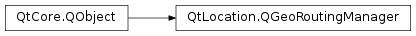

QGeoRoutingManager¶
Synopsis¶
Functions¶
- def
calculateRoute(request) - def
locale() - def
managerName() - def
managerVersion() - def
measurementSystem() - def
setLocale(locale) - def
setMeasurementSystem(system) - def
supportedFeatureTypes() - def
supportedFeatureWeights() - def
supportedManeuverDetails() - def
supportedRouteOptimizations() - def
supportedSegmentDetails() - def
supportedTravelModes() - def
updateRoute(route, position)
Detailed Description¶
The
PySide2.QtLocation.QGeoRoutingManagerclass provides support for geographic routing operations.The
PySide2.QtLocation.QGeoRoutingManager.calculateRoute()andPySide2.QtLocation.QGeoRoutingManager.updateRoute()methods functionPySide2.QtLocation.QGeoRouteReplyobjects, which manage these operations and report on the result of the operations and any errors which may have occurred.The
PySide2.QtLocation.QGeoRoutingManager.calculateRoute()function is used to find a route (or routes) that follows a set of waypoints and matches various other criteria. ThePySide2.QtLocation.QGeoRouteRequestclass is used to specify this information.If supportsRouteUpdates() returns true then the
PySide2.QtLocation.QGeoRoutingManagersupports updating route information based on position updates. This will cause the travel time and distance estimates to be updated, and any QGeoRouteSegments already traversed to be removed from the route.The updates can be triggered with the
PySide2.QtLocation.QGeoRoutingManager.updateRoute()function, which makes use of thePySide2.QtPositioning.QGeoPositionInfoinstances emitted as position updates byPySide2.QtPositioning.QGeoPositionInfoSource.Instances of
PySide2.QtLocation.QGeoRoutingManagercan be accessed withQGeoServiceProvider.routingManager().A small example of the usage of
PySide2.QtLocation.QGeoRoutingManagerand QGeoRouteRequests follows:class MyRouteHandler : public QObject { Q_OBJECT public: MyRouteHandler(QGeoRoutingManager *routingManager, const QGeoCoordinate &origin, const QGeoCoordinate &destination) { QGeoRouteRequest request(origin, destination); // The request defaults to the fastest route by car, which is // equivalent to: // request.setTravelMode(QGeoRouteRequest::CarTravel); // request.setRouteOptimization(QGeoRouteRequest::FastestRoute); request.setAvoidFeatureTypes(QGeoRouteRequest::AvoidTolls); request.setAvoidFeatureTypes(QGeoRouteRequest::AvoidMotorPoolLanes); QGeoRouteRequest::AvoidFeaturesTypes avoidableFeatures = routingManager->supportedAvoidFeatureTypes(); if (!(avoidableFeatures & request.avoidFeatureTypes())) { // ... inform the user that the routing manager does not // provide support for avoiding tolls and/or motor pool lanes ... return; } QGeoRouteReply *reply = routingManager->calculateRoute(request); if (reply->isFinished()) { if (reply->error() == QGeoRouteReply::NoError) { routeCalculated(reply); } else { routeError(reply, reply->error(), reply->errorString()); } return; } connect(routingManager, SIGNAL(finished(QGeoRouteReply*)), this, SLOT(routeCalculated(QGeoRouteReply*))); connect(routingManager, SIGNAL(error(QGeoRouteReply*,QGeoRouteReply::Error,QString)), this, SLOT(routeError(QGeoRouteReply*,QGeoRouteReply::Error,QString))); } private slots: void routeCalculated(QGeoRouteReply *reply) { // A route request can ask for several alternative routes ... if (reply->routes().size() != 0) { // ... but by default it will only get a single route QGeoRoute route = reply->routes().at(0); //... now we have to make use of the route ... } reply->deleteLater(); } void routeError(QGeoRouteReply *reply, QGeoRouteReply:Error error, const QString &errorString) { // ... inform the user that an error has occurred ... reply->deleteLater(); } };
-
PySide2.QtLocation.QGeoRoutingManager.calculateRoute(request)¶ Parameters: request – PySide2.QtLocation.QGeoRouteRequestReturn type: PySide2.QtLocation.QGeoRouteReplyBegins the calculation of the route specified by
request.A
PySide2.QtLocation.QGeoRouteReplyobject will be returned, which can be used to manage the routing operation and to return the results of the operation.This manager and the returned
PySide2.QtLocation.QGeoRouteReplyobject will emit signals indicating if the operation completes or if errors occur.Once the operation has completed,
QGeoRouteReply.routescan be used to retrieve the calculated route or routes.If
requestincludes features which are not supported by this manager, as reported by the methods in this manager, then aQGeoRouteReply.UnsupportedOptionErrorwill occur.The user is responsible for deleting the returned reply object, although this can be done in the slot connected to
QGeoRoutingManager.finished(),QGeoRoutingManager.error(),QGeoRouteReply.finished()orQGeoRouteReply.error()withPySide2.QtCore.QObject.deleteLater().
-
PySide2.QtLocation.QGeoRoutingManager.error(reply, error[, errorString=""])¶ Parameters: - reply –
PySide2.QtLocation.QGeoRouteReply - error –
PySide2.QtLocation.QGeoRouteReply.Error - errorString – unicode
- reply –
-
PySide2.QtLocation.QGeoRoutingManager.finished(reply)¶ Parameters: reply – PySide2.QtLocation.QGeoRouteReply
-
PySide2.QtLocation.QGeoRoutingManager.locale()¶ Return type: PySide2.QtCore.QLocaleReturns the locale used to hint to this routing manager about what language to use for addresses and instructions.
-
PySide2.QtLocation.QGeoRoutingManager.managerName()¶ Return type: unicode Returns the name of the engine which implements the behaviour of this routing manager.
The combination of and
PySide2.QtLocation.QGeoRoutingManager.managerVersion()should be unique amongst the plugin implementations.
-
PySide2.QtLocation.QGeoRoutingManager.managerVersion()¶ Return type: PySide2.QtCore.intReturns the version of the engine which implements the behaviour of this routin manager.
The combination of
PySide2.QtLocation.QGeoRoutingManager.managerName()and should be unique amongst the plugin implementations.
-
PySide2.QtLocation.QGeoRoutingManager.measurementSystem()¶ Return type: PySide2.QtCore.QLocale.MeasurementSystemReturns the measurement system used by this manager.
If
PySide2.QtLocation.QGeoRoutingManager.setMeasurementSystem()has been called then the value returned by this function may be different to that returned byPySide2.QtLocation.QGeoRoutingManager.locale().PySide2.QtCore.QLocale.measurementSystem(). In which case the value returned by this function is what will be used by the manager.
-
PySide2.QtLocation.QGeoRoutingManager.setLocale(locale)¶ Parameters: locale – PySide2.QtCore.QLocaleSets the locale to be used by this manager to
locale.If this routing manager supports returning addresses and instructions in different languages, they will be returned in the language of
locale.The locale used defaults to the system locale if this is not set.
-
PySide2.QtLocation.QGeoRoutingManager.setMeasurementSystem(system)¶ Parameters: system – PySide2.QtCore.QLocale.MeasurementSystemSets the measurement system used by this manager to
system.The measurement system can be set independently of the locale. Both
PySide2.QtLocation.QGeoRoutingManager.setLocale()and this function set the measurement system. The value set by the last function called will be used.
-
PySide2.QtLocation.QGeoRoutingManager.supportedFeatureTypes()¶ Return type: PySide2.QtLocation.QGeoRouteRequest.FeatureTypesReturns the types of features that this manager can take into account during route planning.
-
PySide2.QtLocation.QGeoRoutingManager.supportedFeatureWeights()¶ Return type: PySide2.QtLocation.QGeoRouteRequest.FeatureWeightsReturns the weightings which this manager can apply to different features during route planning.
-
PySide2.QtLocation.QGeoRoutingManager.supportedManeuverDetails()¶ Return type: PySide2.QtLocation.QGeoRouteRequest.ManeuverDetailsReturns the levels of detail for navigation maneuvers which can be requested by this manager.
-
PySide2.QtLocation.QGeoRoutingManager.supportedRouteOptimizations()¶ Return type: PySide2.QtLocation.QGeoRouteRequest.RouteOptimizationsReturns the route optimizations supported by this manager.
-
PySide2.QtLocation.QGeoRoutingManager.supportedSegmentDetails()¶ Return type: PySide2.QtLocation.QGeoRouteRequest.SegmentDetailsReturns the levels of detail for routing segments which can be requested with this manager.
-
PySide2.QtLocation.QGeoRoutingManager.supportedTravelModes()¶ Return type: PySide2.QtLocation.QGeoRouteRequest.TravelModesReturns the travel modes supported by this manager.
-
PySide2.QtLocation.QGeoRoutingManager.updateRoute(route, position)¶ Parameters: - route –
PySide2.QtLocation.QGeoRoute - position –
PySide2.QtPositioning.QGeoCoordinate
Return type: Begins the process of updating
routebased on the current positionposition.A
PySide2.QtLocation.QGeoRouteReplyobject will be returned, which can be used to manage the routing operation and to return the results of the operation.This manager and the returned
PySide2.QtLocation.QGeoRouteReplyobject will emit signals indicating if the operation completes or if errors occur.If supportsRouteUpdates() returns false an
QGeoRouteReply.UnsupportedOptionErrorwill occur.Once the operation has completed,
QGeoRouteReply.routescan be used to retrieve the updated route.The returned route could be entirely different to the original route, especially if
positionis far away from the initial route. Otherwise the route will be similar, although the remaining time and distance will be updated and any segments of the original route which have been traversed will be removed.The user is responsible for deleting the returned reply object, although this can be done in the slot connected to
QGeoRoutingManager.finished(),QGeoRoutingManager.error(),QGeoRouteReply.finished()orQGeoRouteReply.error()withPySide2.QtCore.QObject.deleteLater().- route –
© 2018 The Qt Company Ltd. Documentation contributions included herein are the copyrights of their respective owners. The documentation provided herein is licensed under the terms of the GNU Free Documentation License version 1.3 as published by the Free Software Foundation. Qt and respective logos are trademarks of The Qt Company Ltd. in Finland and/or other countries worldwide. All other trademarks are property of their respective owners.